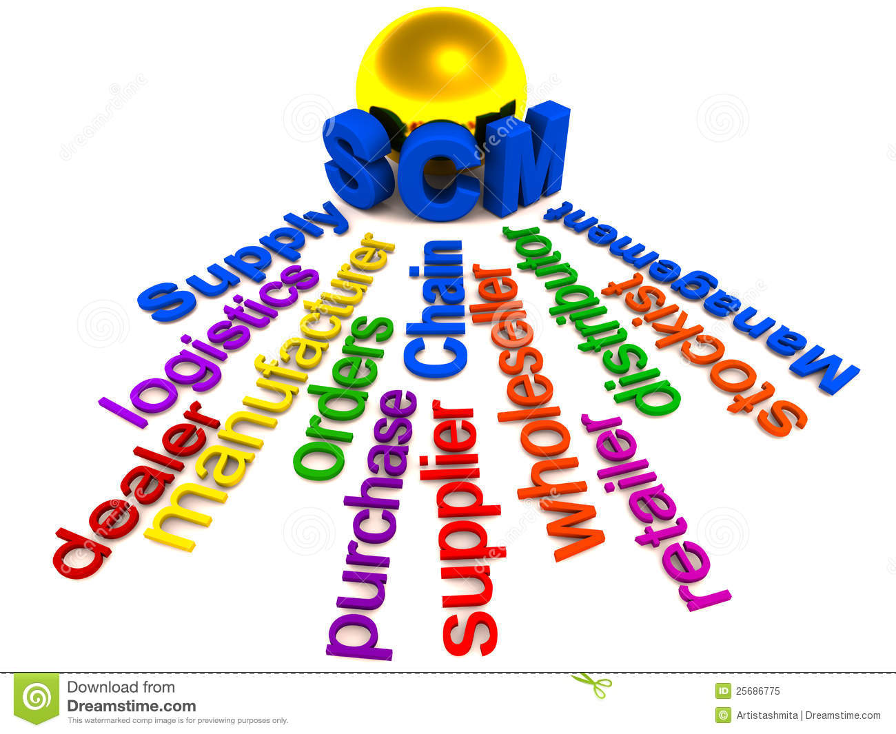
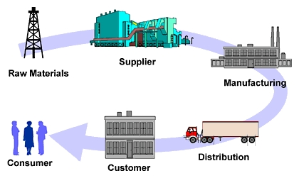
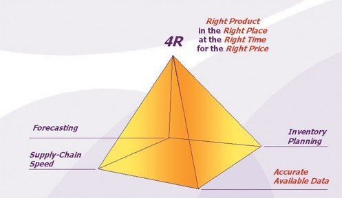

Formal Research Project
The modern business environment brought great pressure to the enterprise, is not only selling products, but also to provide satisfactory service to customers and consumers, thus improve the customer satisfaction, let its produce happiness. Philip Kotler said: "the customer is our god, without them, the enterprise cannot live. All plans must revolve around to retain customers, satisfy the customer." To win customers in the domestic and international market, the inevitable requirement of the supply chain enterprise fast, agile, flexible, and collaboration to respond to the needs of customers. Facing changeable environment of supply chain, build happiness supply chain become the development trend of modern enterprise. However, there are other kinds of managements in the market which had been applied for centuries, why people presently prefer supply chain management, what advantages does it provide?
Generally, supply chain management is a process that make the supply chain operation to reach optimization with minimal cost, make the supply chain from procurement, and satisfy the customer. Including workflow, physical flow, cash flow and information flow are able to operate efficiently, in order to put the right products, at a reasonable price, timely and accurately delivered to consumers.

Coordination of enterprise internal and external resources to meet the demand of consumers, when we see on every link of enterprise supply chain as a virtual enterprise alliance, and any enterprise as the virtual enterprise alliance, a division of the alliance's internal management is supply chain management. The composition of alliance is dynamic, just according to the changes in market needs at any time. In other words, an efficient supply chain management could achieve four goals: Shortening the time of cash flow; Reduce the risk of enterprises; Profitable growth; Provide predictable income.
Supply chain consists of suppliers, manufacturers, warehouse, distribution center and distributors of logistics network. The same enterprise may constitute of different nodes in the network, but more is made up of different enterprises under the condition of different nodes in the network. In a supply chain, for example, the same node enterprise be in manufacturers, warehouse, and occupies a position in distribution center node, etc. In the division of the fine, the higher the professional requirements of supply chain, different nodes are basically made up of different enterprises.

We can see that it is a broader enterprise organization model. It is not only a connection provider to the user's material chain, information chain, capital chain, at the same time, more important is that it is also a value-added chain. Because the material in the supply chain to the processing, packaging, transportation process and increased its value, thus brings to the relevant enterprises on the chain. This is the key. It is the basis of to maintain the supply chain exist.
In the relationship between inventory management of supply chain management and traditional logistics management way, goods flow, cost, information, risk, planning and organization have significant differences, these differences make the supply chain management than traditional logistics management more advantages.
From the point of view of inventory management and goods flow, in the supply chain management, inventory management is to coordinate in the supply chain members, in order to minimize the inventory investment and cost; The traditional logistics management is pushing forward inventory or to treads, particular case is according to supply chain members who most initiative. In fact, the traditional logistics management to push supplier and reduce the inventory in the channel inventory investment, just transfer the inventory. Solution to this problem is by providing information about the production plan, such as Shared information about expected demand, order, production plan, etc, reduce the uncertainty, the lower the safety stock.
From the point of cost, supply chain management is focusing on the final cost of products to optimize supply chain. Final cost mentioned here refers to the total cost of the actual arrived at customer, including purchase price and delivery cost, inventory cost, etc. And the traditional logistics management in terms of cost control is still confined to the internal minimum.
Risk and plan are different from two other important aspects of logistics management of traditional supply chain management . In the supply chain management, risk and plan are done by supply chain members to share and communicate together, and the traditional logistics management is only stay within the company. Relations between the organization, each member of the supply chain management is based on the control of the final cost and cooperation, and the traditional logistics management is based on the company to reduce costs.
The reason of implementation of supply chain management is that the supply chain management is more dynamic than traditional logistics management, and can bring more substantial benefits to supply chain members. To successfully implement supply chain management, however, each must have a very good information sharing between supply chain members; And to do open sharing of information, for enterprises to pursue different objectives, it is not an easy thing, especially when a company with many competitors are under the condition of cooperation, in order to realize information sharing more difficult.
The challenge for the supply chain management is not only existing on an artificial or theoretical level, but also on real marketing. The most important is there are four R, namely the Right Product, Right Place, Right Time, the correct Price. They are four ultimate goals that every supply chain manager want to achieve, but how to exactly make this happen?

Efficient supply chain formed could be made from four aspects:customer-centric, to highlight the enterprise core competition force, win-win concept, and optimize the information flow.
In a sense, supply chain management itself is a result from customer-centric "pull" marketing system, the starting point and the foothold are to create more value for customers, are the pull of market demand as the driving force. Customer value is the core of supply chain management, the enterprise is to organize production according to customer needs; Before the starting power supply chain from manufacturing, production items first, then to market, before the consumers to buy, will not know the effect of sales. In this kind of "push", inventory shortage and the risk of poor sales. Now, products from design began, the enterprise has let customers to participate in, to make our products can meet the needs of their customers. This "pull type system" of the supply chain based on customer demand as the motive power.
Supply chain management begins with the final user. Its architecture consists of three parts: customer service strategy decided how companies responding to customer feedback and expectations from the Angle of profit maximization; Demand transfer strategy is the enterprise in what way will the customer demand and associated products and services to provide broad sourcing strategy decision on where and how to manufacture products and services.
In the supply chain management, an important concept is the emphasis on enterprise's core business and competitiveness, and its positioning in the supply chain, outsourcing non-core business. Due to the limited enterprise resources, the enterprise should be in a wide variety of industries and fields have competitive advantage is very difficult, so it must focus on resources in a own specialty areas, namely core businesses. This positioning in the supply chain, supply chain become a irreplaceable role.
Enterprise core competitive ability has the following characteristics: the first is not imitation, or is other enterprises can't imitate. It may be a technology, may also be a corporate culture. The second point is can't buy, that is no market for such resources, the market can't buy. All available resources in the market are not going to enterprise's core competitiveness. The third point is not dismantle, not dismantle emphasizes the enterprise's resources and capabilities are complementary, with this complementarity, separate is worthless, combined to worth. The fourth is to take don't walk. Emphasizes the resources of the organization, a lot of resources may like people, like you got MBA degree, by this time your price is high, you can take away. Such resources itself does not constitute the core competitiveness of enterprise, take don't walk including complementarity, or it is to belong to enterprise, like the patent right, if the patent right belongs to the individual, the enterprise is not competitive. Some excellent enterprise the reason, can build up for the center with their efficient supply chain, is that they have irreplaceable competitive power, and string together with the competitiveness of the upstream and downstream enterprises, forming an organic chain to create value for customers.
Disconnected between traditional enterprise operations, supply and marketing, is a kind of relationship between rival, poor coordination system. Enterprise and each supplier no coordinated plan, each department to make a set, you want to arrange their own activities, affect the overall optimal. Cooperation with suppliers and distributors are lack of the fat of the strategic relationship, and often from the short term, the lifting of price competition between suppliers, lost the trust of the supplier and cooperation. Market situation is good for the dealer of arrogance, the market situation is bad and trying to losses on to the dealer, so can not get dealer's trust and cooperation. In supply chain management mode, all links all as a whole, the chain enterprise in addition to their own interests, should together to pursue overall competitiveness and profitability. Because finally the customer to choose a product that benefits all members on the supply chain; If the clients not to the final product, the entire members of the supply chain will be affected by losses. Cooperation is, as it were, one of the key of competition between one supply chain and the other.
In the supply chain management, not only has a win-win concept, more important is through technical means to implement ideas form on operating practice. The key lies in the enterprise internal supply chain integration with external suppliers and users, forming an integrated supply chain. With major suppliers and users to establish a good partnership, known as the supply chain cooperation relations, is the key to the integrated supply chain management. At this stage to put special emphasis on strategic partnership management, management of key is geared to the needs of suppliers and users to replace the product, to increase contact with major suppliers and customers, to promote understanding between each other (product, process, organization, enterprise culture, etc.), maintain consistency with each other, realize information sharing, etc.
Enterprise should through to provide users with different from competitors products and services or value-added information. Vendor managed inventory and the application of joint planning, forecasting and inventory replenishment is enterprises to improve and establish good cooperation partnership of typical examples. By establishing the good partner relations, the enterprise can better with customers, suppliers and service providers to achieve integration and cooperation, common in forecasting, product design, production, transportation plan and competitive strategy and so on design and control of the whole supply chain operation. For primary users, enterprise generally established a core team for the user. The team has the function of different functional areas to better provide services for targeting the main users.
Information flow is the process of communication within enterprise employees, customers and suppliers. It used in telephone, fax, or even meet to achieve the purpose of communication. Now we can use E-mail, or even the Internet information communication, although methods are different, but contents do not change. Computer information system and the advantage of its automation and the ability to deal with large amounts of data, make the information circulation speed, at the same time reduce mistakes. Information systems, however, is only tool to support the business process, the business model of enterprise itself determines the architecture model of information system.
In order to adapt to the optimization of supply chain management, we must start from first tier suppliers related to the product, interlocking, until the goods have arrived at the final user, truly according to the characteristics of chain enterprise business processes, make each node enterprises have handle logistics and information flow of self-organization and adaptive ability. To form throughout the supply chain of distribution database information integration, and centralized coordination of different enterprises key data. Key data, refers to the order forecasting, inventory status, out of stock situation, production planning, transportation arrangement, data of in transit goods and materials, etc.
Today's market is a buyer's market, is increasingly competitive global market. Enterprises want to survive in the market, in addition to efforts to improve the quality of the products, and activities in the market for it to adopt a more advanced, more efficient way of management. Supply chain management is in the presence of such a reality, many scholars also definitions are provided for the supply chain management, but in many definitions should be more comprehensive in this article: supply chain management based on market and customer demand as the guidance, under the core enterprise to coordinate, in line with the win-win principle, in order to improve the competitiveness, market share, customer satisfaction, get the most profit as the goal, to collaborative commerce, cooperative competition for business model, by using the modern enterprise management technology, information technology and integrated technology, reach to the whole supply chain information flow, logistics, cash flow, business flow and value flow of effective planning and control, to customers, suppliers, manufacturers, distributors, service providers and other partners together as a complete mesh structure, forming a competitive strategic alliance.
For example, Wal-mart has, as a chain of commercial retail enterprises, a high standard of services, and based on this, they construct the customer network with its core competitiveness. Then, wal-mart beyond their "commercial retail enterprise" identity, set up efficient supply chains. First of all, wal-mart is not just a waiting for manufacturers supply, organization and distribution of the pure commercial enterprises, but also directly involved in the production plan of upstream manufacturers, and manufacturers to discuss and make the product planning, supply, and even helps upstream manufacturers in new product development and quality control, etc. This means wal-mart can always get the earliest most want to see the goods on the market, while other retailers are waiting for the catalogue of the supplier or contract negotiations, wal-mart's shelves already the product sell like hot cakes. Secondly, Wal-mart’s high level of customer service can timely deliver customer feedbacks to vendors, and help manufacturers to improve and perfect products. In the past, just as a middleman, commercial retail enterprises transfer goods from the manufacturer to the consumer's hands, then reverse the opinions of consumers by telephone or written feedback to the vendor. It appears that there is no unique to wal-mart, but the difference is very big. The reason is that wal-mart is able to participate in the production planning and control of the upstream manufacturers, therefore able to quickly reflect consumers into production.

Through the analysis of the concept and features of supply chain management, we can know that: compared with the old rely on natural resources, capital and new product technology of the traditional management mode, to the final customer as the center, customer service, customer satisfaction, customer success as the starting point of the supply chain management does have many advantages. But because of the supply chain is a kind of mesh structure, once a local problem, it is immediately spread throughout the global, so in the process of the operation of supply chain management requires that each member of the enterprise market information collection and feedback to timely, accurate, to achieve quick reaction, reduce the loss. And to do this, supply chain management need advanced information system and powerful information technology as the support.
Throughout the world technology and the development of economy, global integration degree is higher and higher, multinational management is becoming more common. In terms of manufacturing, the design of the product may be in Japan, and procurement of raw materials may be in China or Brazil, parts and components production may be made in Taiwan, Indonesia and other places simultaneously, and then assembled in mainland China, and finally sold to all over the world. Before the products into the consumer market, quite a number of companies involved in the product manufacturing, and due to the different geographical position, production level and management ability, thus forming the complex product manufacturing supply chain network. Such a supply chain in the face of market demand fluctuation, once the lack of effective management system, "whip effect" in each link of the supply chain will inevitably be amplified, thus seriously affect the output of the whole supply chain value. And since the industrial revolution, global production increasingly various. Consumers have more and more choices of products, while technological progress has brought some products, such as electronic product update to upgrade. Shortening product life cycle leads to product demand fluctuations. The adaptability of the market supply and demand pattern of supply chain demand reached unprecedented heights. This is why it is significant to make our managements some progresses and become in-time and more efficient.